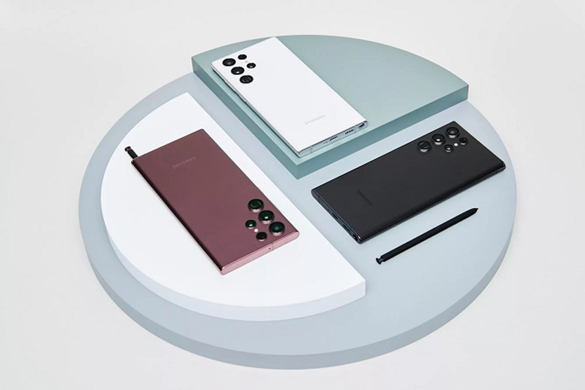
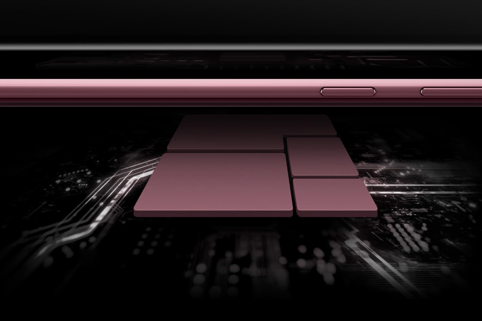
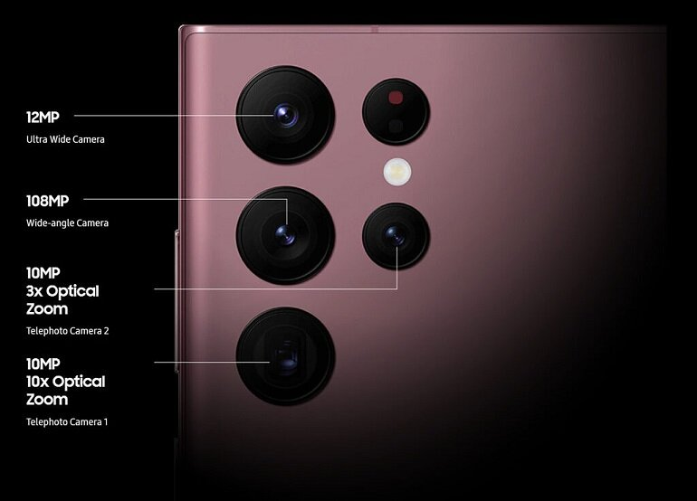
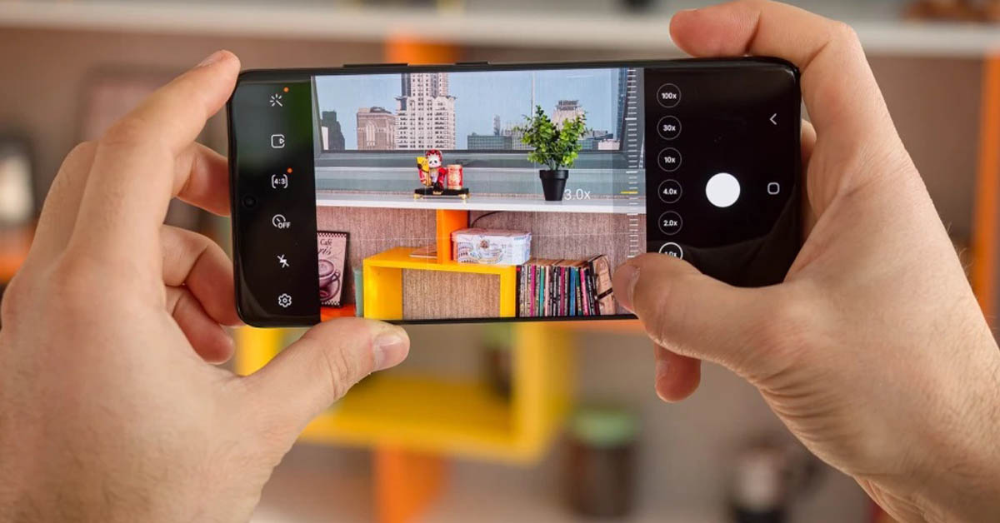
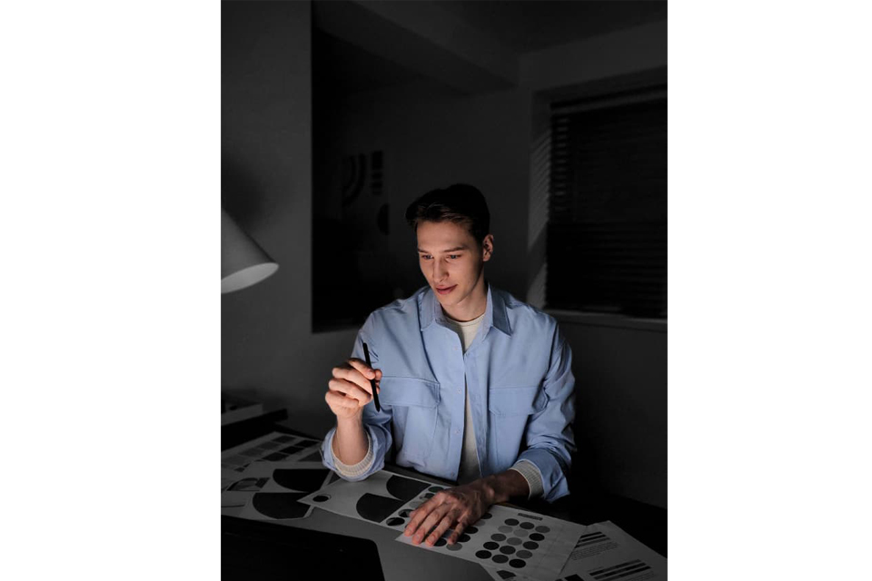
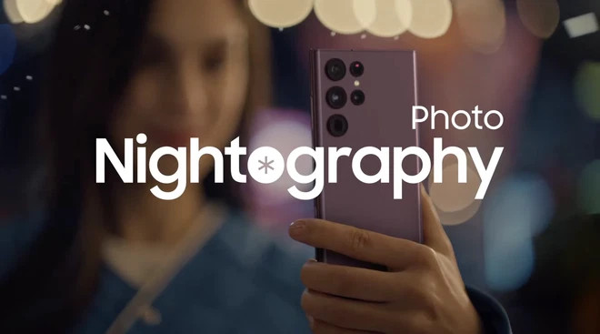
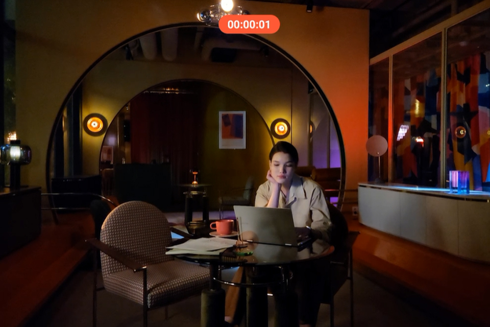
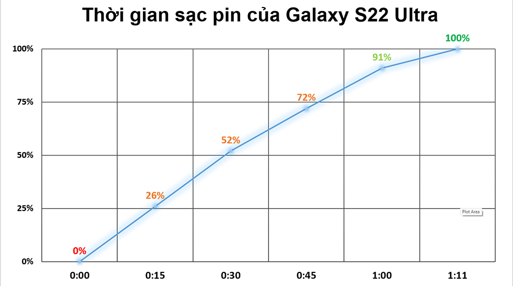

Samsung Galaxy S22 Ultra 5G là siêu phẩm kế thừa tinh hoa Galaxy Note cùng đột phá Galaxy S, tạo nên sức mạnh vô song đỉnh cao. Điện thoại đã thiết lập chuẩn mực mới cho dòng smartphone cao cấp từ sức mạnh hàng đầu Snapdragon 8 Gen 1, camera “mắt thần bóng đêm”, khả năng zoom 100x, bút S-Pen tích hợp và thời gian sử dụng cả ngày dài. Đây là siêu phẩm tuyệt vời nhất mà Samsung từng mang đến.
Cuộc cách mạng về thiết kế
Lần đầu tiên Samsung mang tới thiết kế dòng Galaxy Note lên Galaxy S. Siêu phẩm Galaxy S22
Ultra 5G xuất hiện độc bản đậm chất Galaxy Note, cụm camera không viền độc đáo và màu sắc thời thượng,
tạo nên bản sắc riêng biệt, khó nhầm lẫn trên thị trường.
Dẫn đầu xu hướng màu trên thế hệ di động, Samsung trang bị hai màu sắc hoàn toàn mới là Đỏ Burgundy và
Xanh Zeta bên cạnh hai phiên bản Trắng Phantom và Đen Phantom sang trọng và tinh tế.
Đây cũng là mẫu điện thoại Galaxy bền bỉ nhất với khung viền từ hợp kim nhôm Armor Aluminum cứng cáp nhất thị trường, mặt trước sau là thế hệ kính tiên tiến Corning Gorilla Glass Victus+ cùng chuẩn chống nước bụi IP68 vượt trội.
S-Pen tích hợp sẵn, nâng cấp vượt trội
Chiếc bút S-Pen yêu thích của Galaxy Note nay đã được tích hợp sẵn trên Samsung Galaxy S22 Ultra 5G, mở ra nhiều cách thức sáng tạo cho người dùng.

Bút S-Pen của Samsung Galaxy S22 Ultra 5G còn có nâng cấp vượt trội với độ trễ chỉ còn 2.8ms, cho trải nghiệm viết vẽ chân thực nhất, nâng cao hiệu suất công việc hoàn hảo. Bạn sẽ sử dụng bút S-Pen để phác thảo nhanh ý tưởng, ghi chú mọi lúc, mọi nơi; biến chữ viết tay thành văn bản nhanh chóng, chia sẻ ý tưởng cùng mọi người một cách tiện lợi. Tính năng điều khiển từ xa Air Action còn giúp bạn làm nhiều điều thú vị mà không cần chạm màn hình.

Trải nghiệm sức mạnh hàng đầu
Hiệu năng mạnh mẽ hàng đầu của chip di động nhà Qualcomm chắc chắn sẽ không khiến bạn thất vọng. Samsung Galaxy S22 Ultra cùng Snapdragon 8 Gen 1 mang tới hiệu năng cực kì mạnh mẽ, sẵn sàng mọi tác vụ. Đồng thời, Snapdragon 8 Gen 1 cũng có sức mạnh AI ưu việt, chụp đêm xuất sắc, tiết kiệm pin hiệu quả, tối ưu trải nghiệm tốt nhất cho người dùng.
Tận hưởng màn hình cao cấp mọi lúc, mọi nơi
Màn hình cao cấp nhất hiện nay không ai khác chính là Samsung Galaxy S22 Ultra. Điện thoại với kích thước 6.78 inch, tần số quét thích ứng 120Hz, trên tấm nền Dynamic AMOLED 2X và được bảo vệ bởi kính cường lực thế hệ mới Corning Gorilla Glass Victus+. Màn hình S22 Ultra sẽ cho bạn tận hưởng không gian giải trí tuyệt đỉnh, từ chi tiết rõ ràng đến màu sắc sống động, siêu chân thực. Bạn sẽ thỏa thích đắm chìm trong không gian của riêng mình sau những ngày làm việc, học tập mệt mỏi.

Đồng thời, Galaxy S22 Ultra cũng đạt kỷ lục về độ sáng màn hình smartphone với 1.750 nit. Điện thoại đảm bảo nhìn rõ các chi tiết dù trong điều kiện ánh sáng nào, ngay cả nắng chói. Chưa hết tần số quét 120Hz với khả năng tự động điều chỉnh từ 1Hz đến 120Hz, vừa cho trải nghiệm mượt mà, vừa tiết kiệm pin tốt.
Bậc thầy nhiếp ảnh với 4 camera 108MP
Hội tụ 4 camera đỉnh cao, điện thoại mang tới khung hình chuyên nghiệp để bạn trở thành bậc thầy nhiếp ảnh một cách dễ dàng. Camera chính 108MP vượt trội cho chất ảnh sắc nét đến khó tin, camera góc rộng 12MP ghi lại khung cảnh hùng vĩ hay công trình kiến trúc đồ sộ và hai camera tele 10MP hỗ trợ zoom quang 3x và 10x. Mỗi khung hình sẽ là mỗi khoảnh khắc sáng giá và khung hình đó sẽ trở nên hoàn hảo nhất có thể với Samsung Galaxy S22 Ultra 5G.
Khả năng thu phóng đến 100x đỉnh cao
Hệ thống thu phóng kép của Samsung Galaxy S22 Ultra mang đến chế độ zoom tốt và mạnh mẽ nhất. Bạn có thể zoom đến 100x, các chi tiết siêu xa đều trong tầm tay. Kết hợp đó là cải tiến AI để giúp các chi tiết rõ nét hơn.
Công nghệ chụp đêm tốt nhất
Với nỗ lực tái lập hệ thống phần cứng và cả phần mềm, Samsung Galaxy S22 Ultra là phiên bản có camera tiên tiến và đột phá nhất lịch sử: Mắt thần bóng đêm – Nightography. Camera chính 108MP chứa cảm biến điểm ảnh lớn nhất, có khả năng thu nhiều sáng, chi tiết hơn và giảm nhiễu tối ưu. Ống kính siêu trong mới giúp giảm hiện tượng lóe sáng, để chụp đêm không còn là trở ngại khả năng sáng tạo và khoảnh khắc đêm ấn tượng của bạn.
Tự tin chụp selfie đêm
Camera trước của Samsung Galaxy S22 Ultra với độ phân giải 40MP, điện thoại giúp người dùng có khoảnh khắc selfie ấn tượng. Đồng thời với cải tiến về chụp đêm giảm nhiễu hiệu quả, mang tới các tấm ảnh chân dung rạng ngời, đầy cá tính.
Sẵn sàng sáng tạo video với chống rung thế hệ mới
Thế hệ chống rung mới của Samsung trên S22 Ultra sẽ giúp bạn có thước phim mượt mà. Hãng đã cải tiến
chống
rung tới 58%, dù bạn di chuyển hay chạy xe, điện thoại đều có thể ghi lại các chuyển động với độ chính
xác
cao và rõ nét trong từng khung cảnh.
Super HDR còn điều chỉnh để chi tiết chân thực, màu sắc sống động nhất với khả năng hiển thị màu gấp 64
lần,
sẵn sàng sáng tạo nội dung video trong trong tất cả điều kiện môi trường, ngay cả ngược sáng.
Vén màn khoảnh khắc đêm đầy sắc màu
Những sắc màu và chi tiết trong đêm tối sẽ được hiển thị rõ nét trong video đêm được quay bởi Samsung Galaxy S22 Ultra. Bước cải tiến đột phá của công nghệ ghi hình sẽ giúp bạn có những thước phim chuyên nghiệp ngay cả vào ban đêm. Giải pháp chụp siêu đêm nhờ vào vi xử lý hàng đầu cho khả năng khử nhiễu tối ưu.
Đồng hành cả ngày dài với pin 5.000mAh
Mang trong mình loạt cải tiến công nghệ hàng đầu hiện nay, Samsung không quên trang bị siêu pin cho S22 Ultra. Với viên pin 5.000mAh, điện thoại là người bạn đồng hành lý tưởng để giải quyết công việc, học tập lẫn là thiết bị giải trí tuyệt vời. Công nghệ AI mới còn tối ưu pin để có thể thích ứng với thói quen sử dụng hàng ngày của người dùng. Từ đó, điện thoại sẽ hoạt động thông minh và tối ưu thời lượng dùng tốt nhất. Bên cạnh pin lớn, Galaxy S22 Ultra 5G còn hỗ trợ sạc nhanh đến 45W, nạp đầy pin trong nháy mắt.
Chuyển dữ liệu từ điện thoại cũ sang Galaxy S22 Ultra dễ dàng
Bạn có thể mang toàn bộ dữ liệu từ điện thoại cũ sang Samsung Galaxy S22 Ultra một cách dễ dàng bằng công cụ Smart Switch. Chỉ mất vài bước đơn giản, tất cả dữ liệu của bạn từ danh bạ, tin nhắn, ứng dụng, ảnh, video, tệp tin, thiết lập cài đặt đều được chuyển sang Galaxy S22 Ultra mới. Bạn sẽ ngay lập tức có cảm giác thân thuộc và sử dụng điện thoại một cách dễ dàng. Xem cách chuyển dữ liệu từ điện thoại cũ sang Samsung Galaxy tại đây.


👍Thank you for reading!